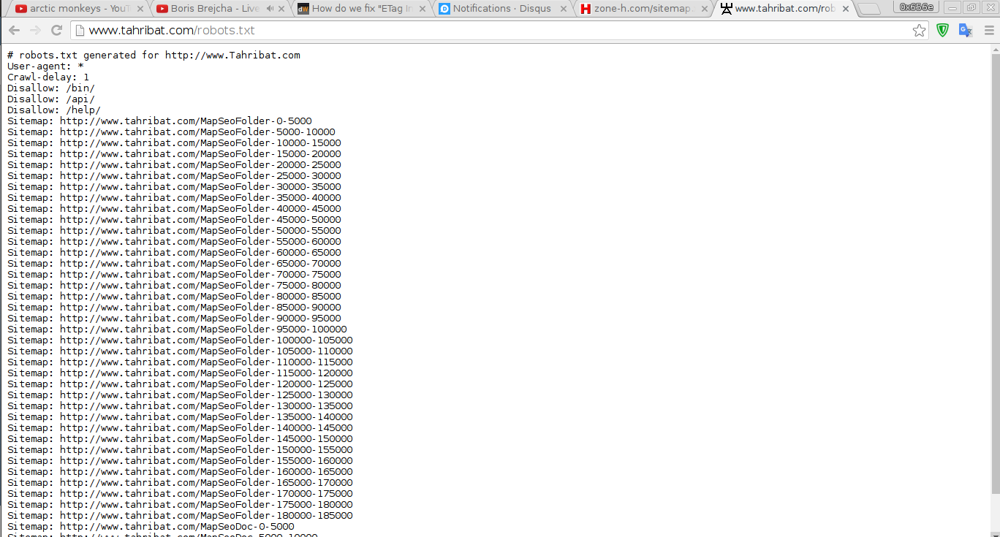
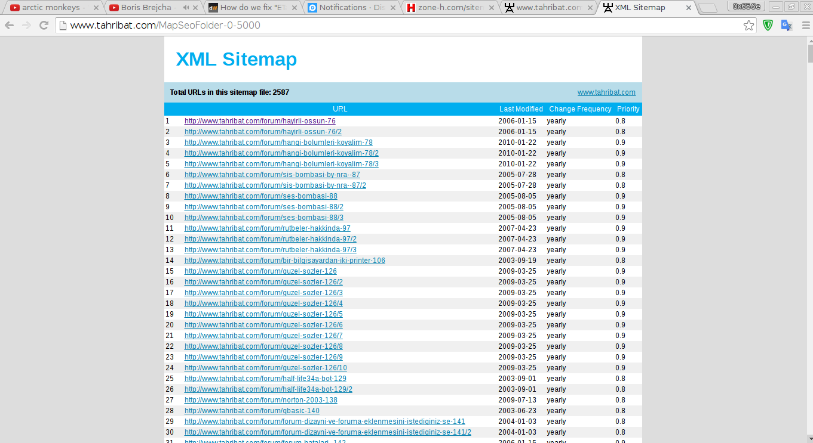
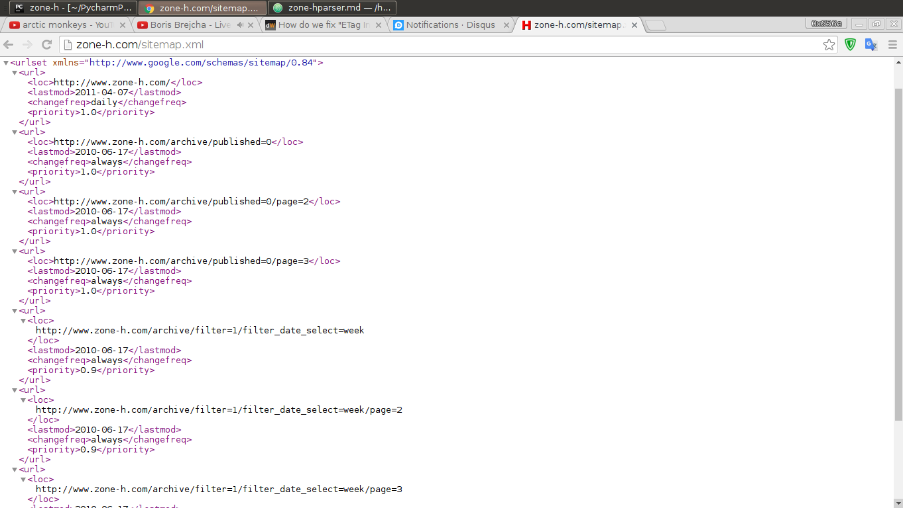
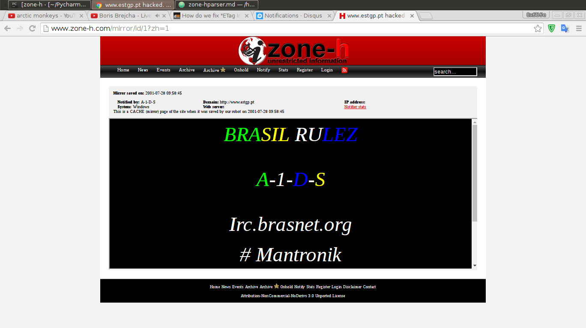

Zone-H Parser
Written on
Zone-H.com'u bilmeyen yoktur herhalde.Kısaca bahsetmek gerekirse blackhat hackerların deface ettikleri sitelerin bir nevi screenshot/snapshot'unu alan bir site.Çok güzel bilgiler barındırabiliyor.Örnek vermek gerekirse Turkiye'de bu site üzerinde kayıtlı kaç blackhat hacker grub/kişi var veya bunlar kaç defacement yapmış şeklinde güzel datalar sağlanabilir.
Bende parse etmeye çalışayım dedim.Bizim baştacımız olan python modüllerinden requests , lxml 'in işimizi görebileceğini düşündüm.Fakat istek yaptığımda bana response olarak içinde bolca şifrelenmiş veri gönderen bir zone-h karşıma çıktı tabi ki bunun yanında captcha ise cabasıydı.Biraz araştırma ile aşağıda vereceğim bir yazı da şifrelenmiş kodları decode etmek için bir yol var.İyi hoş fakat bu seferde captcha sorunu karşımıza çıkıyordu.Bende farklı yollara girdim ve iyi ki de girmişim dedim.
Decode edebileceğiniz yöntem
Şimdi parse etmek için yıllara göre filtreleme seçenekleri kullanmak istedim. Bundan önce öncelikle bi sitemap.xml e bakmak istedim çünkü eğer sitemap.xml de aşağıda ki gibi bir yapı var ise bu benim işimi çok büyük ölçüde kolaylaştıracaktı.İşimi kolaylaştırabilecek bir yapı aşağıda ki resimde bulunuyor.

Gördüğünüz gibi googlebots vs sitemap i otomatik oluşturulan xml lerden çekiyor.

Fakat zone-h'da böyle bir yapı bulamadım.

Neyse salaklığıma denk gelmiş ve bulamamış da olabilirim.Eğer bulabilirseniz yorum mention herhangi bir şekilde yorumunuzu alabilirim Neyse bende id üzerinden gitmeye karar verdim.

Bu şekilde ilk id den başlayıp sonuna kadar gidecektim.Projemde selenium kullandım.(Çünkü captcha ve bazı mirrorlarda hata oluyor.)
Hatalı bir mirror örneği
Neyse kodlara geçelim.
import os,sqlite3
from selenium import webdriver
from selenium.common.exceptions import NoSuchElementException
from selenium.webdriver.chrome.options import Options
chromedriver = "/home/0x656e/Downloads/chromedriver"
os.environ["webdriver.chrome.driver"] = chromedriver
chrome_options = Options()
chrome_options.add_argument("--disable-javascript --disable-javascript-i18n-api")
chrome_options.add_argument("load-extension=/home/0x656e/.config/google-chrome/Default/Extensions/fdcgdnkidjaadafnichfpabhfomcebme/5.5.6_0/")
driver = webdriver.Chrome(chromedriver,chrome_options=chrome_options)
def geturl(url):
try:
driver.get(url)
notified = driver.find_element_by_css_selector('.defacet a').get_attribute('href')
checkdb(notified)
except NoSuchElementException:
return "ID"
def checkdb(notified):
op = sqlite3.connect("zone-h.db")
cs = op.cursor()
notified = notified.lower()
query = """SELECT * FROM teams where teamurl='%s'""" %notified
query = cs.execute(query).fetchall()
if query == []:
teamname = notified.split("=")[1]
cs.execute("INSERT INTO teams(teamname,teamurl) VALUES(?,?)",(teamname,notified))
op.commit()
op.close()
print(teamname+ "is added")
else:
pass
id = 512
while True:
link = "http://www.zone-h.com/mirror/id/%s" %id
chk = geturl(link)
if chk == False:
print(id)
driver.quit()
elif chk == "ID":
print("Hatalı id:"+str(id))
print("# Captchayı veya hatayı giderdiyseniz 1'e basın aksi halde 1 harici bir tuşa basın")
islem = input("Komut : >")
if islem == "1":
id = id
else:
id +=1
else:
id += 1
print(id)
Alt kısmıda db oluşturmak için kullandım.
import sqlite3
op = sqlite3.connect("zone-h.db")
cs = op.cursor()
cs.execute("CREATE TABLE teams(id integer primary key AUTOINCREMENT,teamname TEXT,teamurl TEXT)")
op.commit()
op.close()
Kod da plugin olarak zenmate kullandım.Captcha vs gelirse eğer kodun içinde input kısmı bulunuyor.Captchayı girdikten sonra 1 e basarsanız captchalı id den devam edecektir.Github'a koymayı düşünüyorum.Commitlerinizi beklerim.Eğer tüm siteyi çeken olursa datayı da isterim daha farklı projelerimde kullanmak için.
Kodlarla ilgili bir sorunuz olursa yorum veya mail ile belirtebilir/sorabilirsiniz.